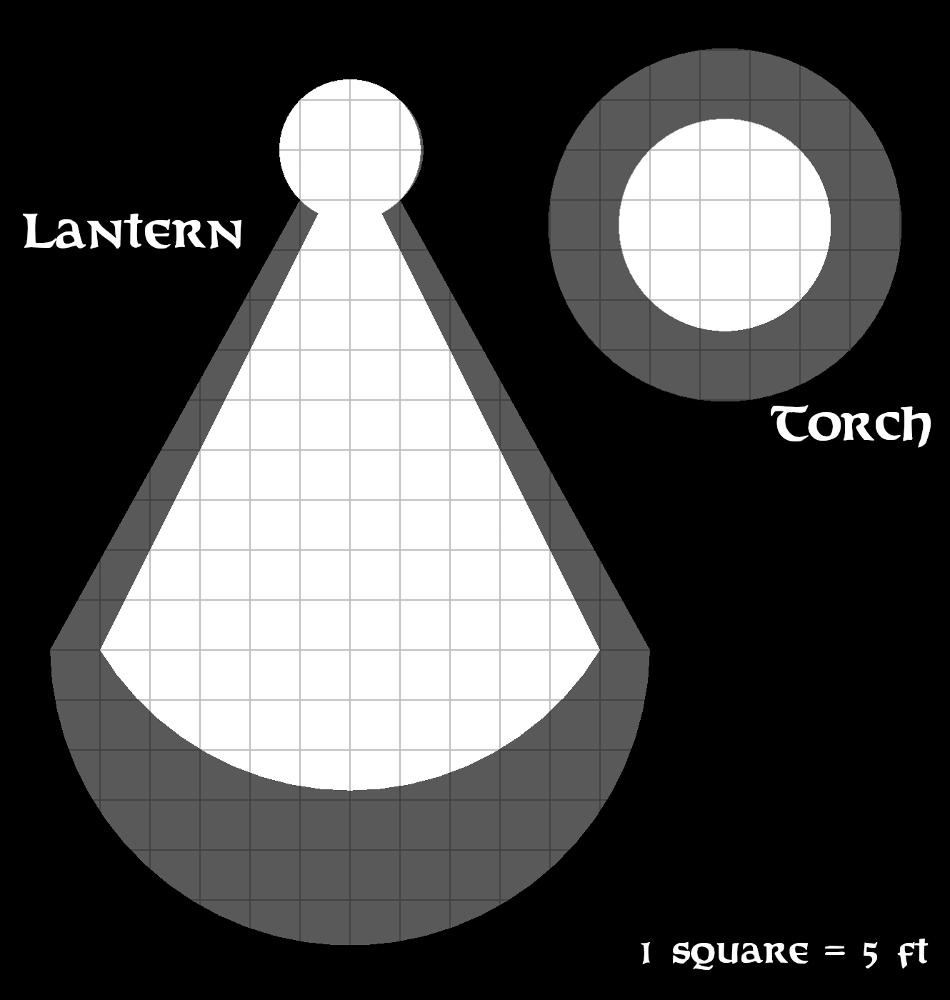

<div class="outerShell">
  <div class="innerShell">
    <div class="backTexture"></div>
    <div class="backColor"></div>
    <div class="chapterShell">
      <div class="anchor">
        <div id="15hbYNKwyrdVf" class="anchorTag"></div>
        <h1>ABILITY SCORE DAMAGE</h1>
        <div class="underline"></div>
      </div>
      <div class='paragraphShell anchor'>
        <div id='15pmEMfrIMWen' class='anchorTag'></div>
        <app-bm-chapter-icon [id]="'15pmEMfrIMWen'"></app-bm-chapter-icon>
        <p> Ability score damage occurs in several places and it’s fairly straightforward. Then why have this section,
          you ask? As a quick aside to keep the game moving.</p>
      </div>
      <div class='paragraphShell anchor'>
        <div id='15pdjzvbJxAad' class='anchorTag'></div>
        <app-bm-chapter-icon [id]="'15pdjzvbJxAad'"></app-bm-chapter-icon>
        <p> The sudden change in ability is incredibly unnerving, meaning that until the person can stop, take a breath
          and re-adjust to their new reality (meaning the player can adjust the stats on his character sheet without
          breaking off Combat, a Conflict, a Challenge or any narrative tension the GM has built up), he gets a penalty
          of 1 for each point lost to any thing that Ability Score influences. So, a -3 to Dexterity would net a
          temporary -3 to Attack, and Defense, +3 to Initiative, all while reducing the Social Die by 3 sizes, if
          applicable.</p>
      </div>
      <div class='marginBottom paragraphShell anchor'>
        <div id='15pLFCuaeUnTp' class='anchorTag'></div>
        <app-bm-chapter-icon [id]="'15pLFCuaeUnTp'"></app-bm-chapter-icon>
        <p> If the amount drained is more than the score, the person becomes appropriately incapacitated, but not dead,
          until the Ability Score damage is healed.</p>
      </div>
      <div class="anchor">
        <div id="15hOfPmmhELBY" class="anchorTag"></div>
        <h1>FALLING DAMAGE</h1>
        <div class="underline"></div>
      </div>
      <div class='marginBottom paragraphShell anchor'>
        <div id='15pAYkdDHxaUr' class='anchorTag'></div>
        <app-bm-chapter-icon [id]="'15pAYkdDHxaUr'"></app-bm-chapter-icon>
        <p> When your character falls, they take damage based on how far that surpasses their DR from armor, however,
          they can do somethings to help their decent.</p>
      </div>
      <div class='tableOverflowWindow anchor FallingDamageTable'>
        <div id='15t1' class='anchorTag'></div>
        <app-bm-chapter-icon [id]="'15t1'"></app-bm-chapter-icon>
        <div class='tableOuterShell' [ngStyle]='{width: "175px"}'>
          <h1 class='tableTitle'>Falling Damage</h1>
          <div class='tableHeaders'>
            <div class='tableRow'>
              <div class='tableValue'>
                <p class='FallingDamagevalue TableIndividual'>Distance (ft)</p>
                <p class='FallingDamagevalue TableIndividual'>Damage</p>
              </div>
              <div class='tableValue'>
                <p class='FallingDamagevalue TableIndividual'><5</p> <p class='FallingDamagevalue TableIndividual'>0
                </p>
              </div>
              <div class='tableValue'>
                <p class='FallingDamagevalue TableIndividual'>10</p>
                <p class='FallingDamagevalue TableIndividual'>1d12!</p>
              </div>
              <div class='tableValue'>
                <p class='FallingDamagevalue TableIndividual'>20</p>
                <p class='FallingDamagevalue TableIndividual'>2d12!</p>
              </div>
              <div class='tableValue'>
                <p class='FallingDamagevalue TableIndividual'>40</p>
                <p class='FallingDamagevalue TableIndividual'>3d12!</p>
              </div>
              <div class='tableValue'>
                <p class='FallingDamagevalue TableIndividual'>60</p>
                <p class='FallingDamagevalue TableIndividual'>4d12!</p>
              </div>
              <div class='tableValue'>
                <p class='FallingDamagevalue TableIndividual'>70</p>
                <p class='FallingDamagevalue TableIndividual'>5d12!</p>
              </div>
              <div class='tableValue'>
                <p class='FallingDamagevalue TableIndividual'>75</p>
                <p class='FallingDamagevalue TableIndividual'>6d12!</p>
              </div>
              <div class='tableValue'>
                <p class='FallingDamagevalue TableIndividual'>80</p>
                <p class='FallingDamagevalue TableIndividual'>7d12!</p>
              </div>
              <div class='tableValue'>
                <p class='FallingDamagevalue TableIndividual'>82</p>
                <p class='FallingDamagevalue TableIndividual'>8d12!</p>
              </div>
              <div class='tableValue'>
                <p class='FallingDamagevalue TableIndividual'>85</p>
                <p class='FallingDamagevalue TableIndividual'>9d12!</p>
              </div>
              <div class='tableValue'>
                <p class='FallingDamagevalue TableIndividual'>87</p>
                <p class='FallingDamagevalue TableIndividual'>10d12!</p>
              </div>
              <div class='tableValue'>
                <p class='FallingDamagevalue TableIndividual'>90</p>
                <p class='FallingDamagevalue TableIndividual'>11d12!</p>
              </div>
              <div class='tableValue'>
                <p class='FallingDamagevalue TableIndividual'>+1 Ft</p>
                <p class='FallingDamagevalue TableIndividual'> +1d12!</p>
              </div>
            </div>
          </div>
        </div>
      </div>
      <div class='tableOverflowWindow anchor FallingModifiersTable'>
        <div id='15t2' class='anchorTag'></div>
        <app-bm-chapter-icon [id]="'15t2'"></app-bm-chapter-icon>
        <div class='tableOuterShell' [ngStyle]='{width: "300px"}'>
          <h1 class='tableTitle'>Falling Modifiers</h1>
          <div class='tableHeaders'>
            <div class='tableRow'>
              <div class='tableValue'>
                <p class='FallingModifiersvalue TableIndividual'>Distance</p>
                <p class='FallingModifiersvalue TableIndividual'>Action</p>
              </div>
              <div class='tableValue'>
                <p class='Fall?ingModifiersvalue TableIndividual'>-5 Ft</p>
                <p class='FallingModifiersvalue TableIndividual'>Expecting The Fall</p>
              </div>
              <div class='tableValue'>
                <p class='FallingModifiersvalue TableIndividual'>- Height</p>
                <p class='FallingModifiersvalue TableIndividual'>Lowering Yourself First</p>
              </div>
              <div class='tableValue'>
                <p class='FallingModifiersvalue TableIndividual'>-5 Ft</p>
                <p class='FallingModifiersvalue TableIndividual'>Soft Landing</p>
              </div>
              <div class='tableValue'>
                <p class='FallingModifiersvalue TableIndividual'>-15 Ft</p>
                <p class='FallingModifiersvalue TableIndividual'>Water Landing</p>
              </div>
              <div class='tableValue'>
                <p class='FallingModifiersvalue TableIndividual'>See Skill</p>
                <p class='FallingModifiersvalue TableIndividual'>Acrobatics Check</p>
              </div>
            </div>
          </div>
        </div>
      </div>
      <div class="anchor fallingMargin">
        <div id="15hLzcrnSHGfR" class="anchorTag"></div>
        <h1>ILLUMINATION</h1>
        <div class="underline"></div>
      </div>
      <div class='marginBottom paragraphShell anchor'>
        <div id='15plWgtjeFHUU' class='anchorTag'></div>
        <app-bm-chapter-icon [id]="'15plWgtjeFHUU'"></app-bm-chapter-icon>
        <p> For sake of simplicity, there’s five categorization of how much light there is in an area:</p>
      </div>
      <div class="space"></div>
      <div class='paragraphShell anchor'>
        <div id='15KhJmVtGSZa' class='anchorTag'></div>
        <app-bm-chapter-icon [id]="'15KhJmVtGSZa'"></app-bm-chapter-icon>
        <p><strong class='orangeHeader'>BLINDING</strong> This is like staring into the sun. It's very painful and not very pleasant.</p>
      </div>
      <div class='paragraphShell anchor'>
        <div id='15cAyfqeBStd' class='anchorTag'></div>
        <app-bm-chapter-icon [id]="'15cAyfqeBStd'"></app-bm-chapter-icon>
        <p> Assuming that you cover your eyes, you'll be acting as if you're blind. Even then, a moment's exposure even temporarily results in a d10! second delay as you try to recover. If you continue to expose yourself to this level of illumination, you'll be unable to act at all and will do blind in a number of seconds equal to your Con.</p>
      </div>
      <div class='paragraphShell anchor'>
        <div id='15dyOqSgYsAb' class='anchorTag'></div>
        <app-bm-chapter-icon [id]="'15dyOqSgYsAb'"></app-bm-chapter-icon>
        <p><strong class='orangeHeader'>BRIGHT</strong> This is the level of light of starting into a fire or just having your eyes near it. It sucks but it probably won't do permanent damage.</p>
      </div>
      <div class='paragraphShell anchor'>
        <div id='15MOmmKzVETP' class='anchorTag'></div>
        <app-bm-chapter-icon [id]="'15MOmmKzVETP'"></app-bm-chapter-icon>
        <p> This doesn't really affect your aim or anything like that but it does make it difficult to focus on things, delaying any action by 1d4! seconds as you try and squint and see what you're doing.</p>
      </div>
      <div class='paragraphShell anchor'>
        <div id='15pgRMGFLEoU' class='anchorTag'></div>
        <app-bm-chapter-icon [id]="'15pgRMGFLEoU'"></app-bm-chapter-icon>
        <p> It also raises the difficulty of any Skill Checks that require sight by 2.</p>
      </div>
      <div class='paragraphShell anchor'>
        <div id='15poasvkbMjJc' class='anchorTag'></div>
        <app-bm-chapter-icon [id]="'15poasvkbMjJc'"></app-bm-chapter-icon>
        <p><strong class='orangeHeader'>NORMAL</strong> This is normal daylight and occurs no operating penalties.</p>
      </div>
      <div class='paragraphShell anchor'>
        <div id='15piXLscZEzyh' class='anchorTag'></div>
        <app-bm-chapter-icon [id]="'15piXLscZEzyh'"></app-bm-chapter-icon>
        <p><strong class='orangeHeader'>DIM-LIGHTING</strong> This the equivalent of a dark room or night time. There’s
          some visibility; the character can make out shapes and shadows but no fine details.</p>
      </div>
      <div class='paragraphShell anchor'>
        <div id='15pOuMJNhowgm' class='anchorTag'></div>
        <app-bm-chapter-icon [id]="'15pOuMJNhowgm'"></app-bm-chapter-icon>
        <p> In melee combat, those in dim-lighting defend and attack with a 1d12! and using ranged weapons is even more
          of challenge. However, if you insist, you’ll be attacking with a 1d6!.</p>
      </div>
      <div class='paragraphShell anchor'>
        <div id='15punZkQpsape' class='anchorTag'></div>
        <app-bm-chapter-icon [id]="'15punZkQpsape'"></app-bm-chapter-icon>
        <p> Any Skill Challenges that require sight have their difficulties increased by 2.</p>
      </div>
      <div class='paragraphShell anchor'>
        <div id='15pEtfBFIIuRh' class='anchorTag'></div>
        <app-bm-chapter-icon [id]="'15pEtfBFIIuRh'"></app-bm-chapter-icon>
        <p> Additionally, Sprinting is impossible without acquiring a Stress per second moved.</p>
      </div>
      <div class='paragraphShell anchor'>
        <div id='15pxjdRjNnWsm' class='anchorTag'></div>
        <app-bm-chapter-icon [id]="'15pxjdRjNnWsm'"></app-bm-chapter-icon>
        <p><strong class='orangeHeader'>DARK</strong> This is pitch black with the character not even being able to see
          their hands in front of their faces. This is a dungeon after the torch goes out.</p>
      </div>
      <div class='paragraphShell anchor'>
        <div id='15pGuTGJmTpWT' class='anchorTag'></div>
        <app-bm-chapter-icon [id]="'15pGuTGJmTpWT'"></app-bm-chapter-icon>
        <p> Combat becomes difficult as anyone in darkness defends and attacks with a 1d6! And ranged combat is right
          out, but, if you insist, you’ll be attacking with a 1d4.</p>
      </div>
      <div class='paragraphShell anchor'>
        <div id='15pBubiiLvVcf' class='anchorTag'></div>
        <app-bm-chapter-icon [id]="'15pBubiiLvVcf'"></app-bm-chapter-icon>
        <p> Any Skill Challenges that require sight have their Rank halved.</p>
      </div>
      <div class='marginBottom paragraphShell anchor'>
        <div id='15pyfxfIboxFI' class='anchorTag'></div>
        <app-bm-chapter-icon [id]="'15pyfxfIboxFI'"></app-bm-chapter-icon>
        <p> And moving above Strolling speed is extremely nerve racking, netting a Stress per Speed Category per second.
          So, moving at a Run for 3 seconds gives you 9 Stress (3 for the Run for 3 seconds).</p>
      </div>
      <div class="space"></div>
      <div class="anchor marginBottom miscImage">
        <div id="15iNYOvpggKYU" class="anchorTag"></div>
        
      </div>
      <div class='marginBottom paragraphShell anchor'>
        <div id='15pSOXerpTpXq' class='anchorTag'></div>
        <app-bm-chapter-icon [id]="'15pSOXerpTpXq'"></app-bm-chapter-icon>
        <p> There are currently three sources of light. How they shed their light is noted on the left:</p>
      </div>
      <div class='marginBottom paragraphShell anchor'>
        <div id='15prNQhpLNtTJ' class='anchorTag'></div>
        <app-bm-chapter-icon [id]="'15prNQhpLNtTJ'"></app-bm-chapter-icon>
        <p> The white is considered Normal, the light grey is Dimly Lit and the beyond that is Dark, assuming no other
          light sources are provided.</p>
      </div>
      <div class="anchor imageMargin">
        <div id="15hfrDRlgsYQh" class="anchorTag"></div>
        <h1>LONG TERM EXHAUSTION</h1>
        <div class="underline"></div>
      </div>
      <div class='paragraphShell anchor'>
        <div id='15pgLmIdPreGz' class='anchorTag'></div>
        <app-bm-chapter-icon [id]="'15pgLmIdPreGz'"></app-bm-chapter-icon>
        <p> Fatigue can be caused by more than just running around the battlefield. It can result, and often does, by a
          lack of proper food, water, and sleep.</p>
      </div>
      <div class='paragraphShell anchor'>
        <div id='15pMFKhdzPgEf' class='anchorTag'></div>
        <app-bm-chapter-icon [id]="'15pMFKhdzPgEf'"></app-bm-chapter-icon>
        <p> A character going without either of these three things for a day automatically gains a Level of Fatigue that
          does not go away until she’s gotten what she’s lacking.</p>
      </div>
      <div class='marginBottom paragraphShell anchor'>
        <div id='15pOcOKPCiNAn' class='anchorTag'></div>
        <app-bm-chapter-icon [id]="'15pOcOKPCiNAn'"></app-bm-chapter-icon>
        <p> This does stack; so a character who’s gone without food, water, or sleep for an entire day gains 3 Levels of
          Fatigue (netting them a -4 to Attack, Damage, Defense, and a +4 to his Fatigue Score, Speed, and Skill Checks)
          until they’ve had their fair share of water, food, and rest.</p>
      </div>
      <div class="space"></div>
      <div class='paragraphShell anchor'>
        <div id='15phsOBUYZFwb' class='anchorTag'></div>
        <app-bm-chapter-icon [id]="'15phsOBUYZFwb'"></app-bm-chapter-icon>
        <p> If this continues for a number of levels equal to the character’s Con Score, they must then make a Con check
          vs d20! + the number of days they’ve had to make the check. A failure indicates the character has died.</p>
      </div>
      <div class='marginBottom paragraphShell anchor'>
        <div id='15pVfKCuaBtVI' class='anchorTag'></div>
        <app-bm-chapter-icon [id]="'15pVfKCuaBtVI'"></app-bm-chapter-icon>
        <p> So, a character with 8 Con can go 8 days without water before making checks.</p>
      </div>
      <div class="space"></div>
      <div class='paragraphShell anchor'>
        <div id='15pEaholPOCiD' class='anchorTag'></div>
        <app-bm-chapter-icon [id]="'15pEaholPOCiD'"></app-bm-chapter-icon>
        <p> What’s more likely, however, is the character going on reduced rations to survive.</p>
      </div>
      <div class='paragraphShell anchor'>
        <div id='15pyAYflwuHDg' class='anchorTag'></div>
        <app-bm-chapter-icon [id]="'15pyAYflwuHDg'"></app-bm-chapter-icon>
        <p> An average adventurer needs 5 pounds of food, half a gallon of water, and 8 hours of sleep each day.</p>
      </div>
      <div class='paragraphShell anchor'>
        <div id='15pEDNbecttCl' class='anchorTag'></div>
        <app-bm-chapter-icon [id]="'15pEDNbecttCl'"></app-bm-chapter-icon>
        <p> Every half pound of food, 8 oz of water, and hour of sleep off that raises the Fatigue Score of the
          individual by 1. This is cumulative over the successive number of days skipped.</p>
      </div>
      <div class='paragraphShell anchor'>
        <div id='15pgpbHtarvZa' class='anchorTag'></div>
        <app-bm-chapter-icon [id]="'15pgpbHtarvZa'"></app-bm-chapter-icon>
        <p> If the Fatigue Score penalty inflicted this way exceeds the character’s Con, they then have to make a check
          every morning for each thing they’ve been skimping on, becoming Fatigued for each failure as if they had
          completely skipped what they’re restricted on that day, but resets their Fatigue Score back to what it was
          natively.</p>
      </div>
      <div class='marginBottom paragraphShell anchor'>
        <div id='15pGmsduCeiuh' class='anchorTag'></div>
        <app-bm-chapter-icon [id]="'15pGmsduCeiuh'"></app-bm-chapter-icon>
        <p> It’s a much slower way to die.</p>
      </div>
    </div>
    <div *ngIf=navDisplay class="tableShell" (click)="displayTables()">
      <p>Hide Quick Nav</p>
    </div>
    <div class="sideShell">
      <app-quick-nav *ngIf=navDisplay [side]="side"></app-quick-nav>
    </div>
    <div class="tableShell" (click)="displayTables()">
      <p>Show Quick Nav</p>
    </div>
    <h1 class="chapterTitle">Miscellaneous Rules</h1>
  </div>
</div>